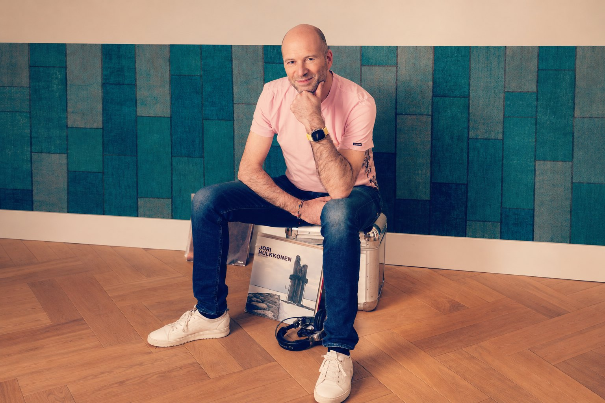

OPDRACHT
Maarten Versteeg is rechtstreeks te boeken als dj en is daarnaast ook aangesloten bij Architects in Music, dat dj’s plaatst op bijzondere locaties en evenementen. Van luxe cocktailbars en skylounges tot beachclubs en corporate events.

Maarten verbindt meerdere decennia muziek naadloos aan elkaar. Zijn sets zijn avontuurlijk en gevarieerd, maar voelen toch als één geheel.
Maarten Versteeg is rechtstreeks te boeken als dj en is daarnaast ook aangesloten bij Architects in Music, dat dj’s plaatst op bijzondere locaties en evenementen. Van luxe cocktailbars en skylounges tot beachclubs en corporate events.
Met deephouse als verbindende schakel draait Maarten de soulvolle kant van elektronische muziek (soulful house, garage, disco, latin, afro) en de meer abstracte kant (tech-house), afhankelijk van wat de avond vraagt.
Zonder poespas of instagrammable moves is het juist de muziek die avontuurlijk is. De inhoud is de performance: het durven combineren van verschillende genres, van classics tot vernieuwend werk, toont een connaisseur met een brede platenkennis en gevoel voor samenhang.
Zoiets voor jouw event?
Stel je vraag via WhatsApp→